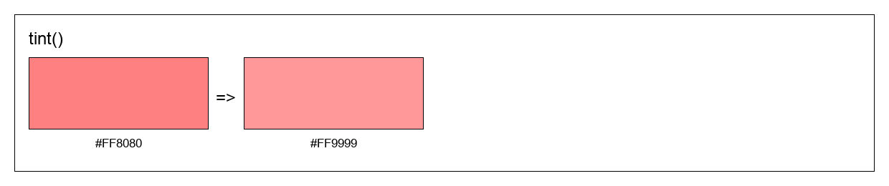
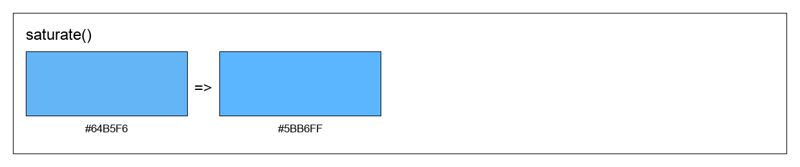
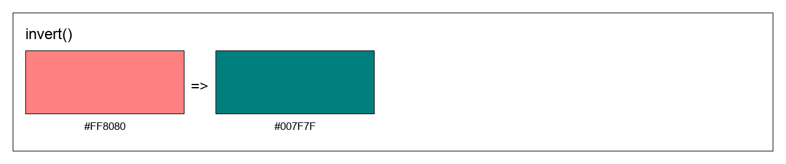

Operations
color = Colorisator( "#64B5F6")
color = Colorisator( "#6F1")
color = Colorisator( (100, 181, 246) )
# or any color
darken / lighten
c = color.darken(0.3)
c = color.lighten(0.3)


tint / shade
c = color.tint(0.3)
c = color.shade(0.3)


saturate / desaturate
c = color.saturate(0.3)
c = color.desaturate(0.3)


adjust_hue
c = color.adjust_hue(30/360)

grayscale
c = color.grayscale()

complement
c = color.complement()

invert
c = color.invert()
